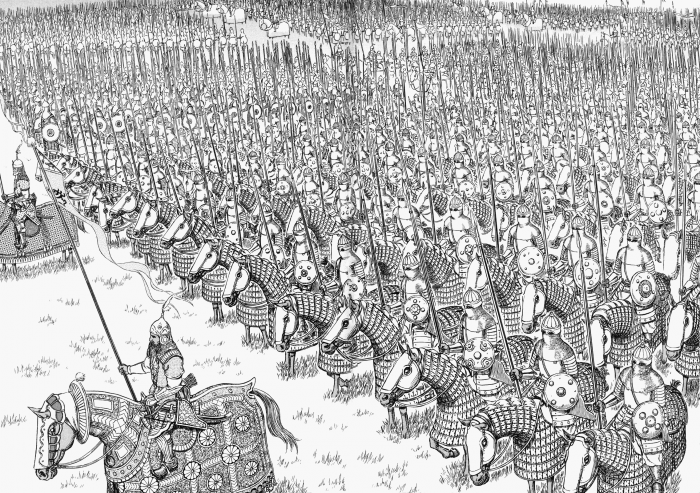

Exércitos
Explorar
Página Inicial
Arcos da História
A Mão de Deus
A Ideia do Mal
A Marca do Sacrifício
Mundo de Berserk
Personagens
Locais
Exércitos
O Behelit
Mídias
Animes
Mangá
Filmes
Jogos
O Autor
Exércitos Presentes na Obra
Guerreiros do Império Kushan
